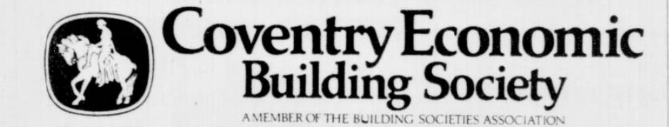

CoventryClick any card to explore that society's page.
Coventry Economic Building Society was formed in 1959 following the renaming of Coventry Permanent Economic Building Society. In 1976, it accepted a transfer of engagements from Stourbridge, Lye & District Permanent Building Society. It later merged with Coventry Provident Building Society in 1983 to form Coventry Building Society.
Last updated: 04/05/2026 or before